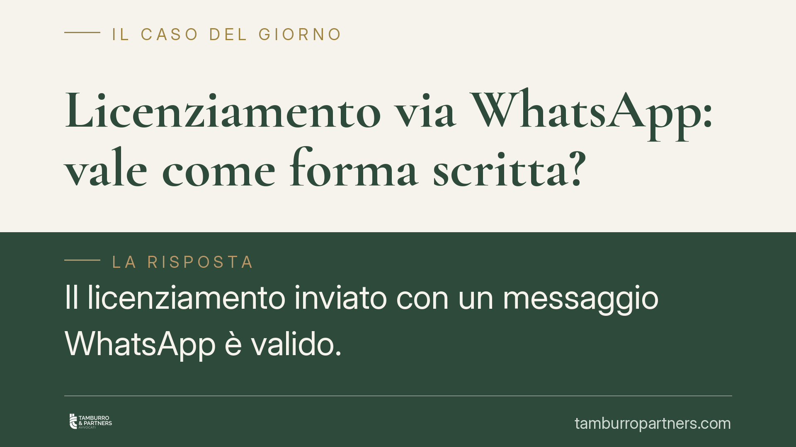

Licenziamento via WhatsApp: vale come forma scritta?
Il licenziamento inviato con un messaggio WhatsApp è valido. Lo conferma il Tribunale di Udine: se la comunicazione garantisce certezza, imputabilità e conoscenza del recesso, il requisito della forma scritta è rispettato, anche senza firma. Una decisione che incide sulle prassi aziendali e sulle tutele del lavoratore.

Il caso
Un datore di lavoro comunica il licenziamento al dipendente tramite un messaggio WhatsApp. Il lavoratore impugna il recesso sostenendo che la modalità non rispetti la forma scritta imposta dalla legge e che la mancanza di firma renda l'atto nullo.
Il Tribunale di Udine respinge la tesi: il messaggio WhatsApp, quando identifica con chiarezza il mittente e manifesta in modo inequivoco la volontà di recedere, soddisfa il requisito della forma scritta previsto per il licenziamento.
Inquadramento normativo
L'art. 2 della Legge 604/1966 stabilisce che il licenziamento deve essere comunicato per iscritto al lavoratore, a pena di inefficacia. La norma tutela il dipendente garantendo certezza sul fatto che il rapporto si è interrotto e sui motivi del recesso, da cui decorrono anche i termini per l'impugnazione.
La legge, però, non impone un documento cartaceo né la sottoscrizione autografa. Richiede che la volontà di licenziare sia espressa in forma scritta e portata a conoscenza del destinatario. Secondo un orientamento ormai consolidato, la "forma scritta" si considera rispettata ogni volta che la dichiarazione è trasfusa in un testo leggibile e riferibile con certezza al suo autore.
Il messaggio WhatsApp rientra in questa categoria. È un documento informatico ai sensi del Codice dell'amministrazione digitale (D.lgs. 82/2005): il testo è scritto, resta memorizzato e la provenienza è ricostruibile attraverso l'utenza telefonica e l'account associato. Per il Tribunale di Udine, tre elementi sono decisivi: la certezza del contenuto, l'imputabilità al datore di lavoro e la conoscenza del recesso da parte del lavoratore.
Quanto alla firma, la sua assenza non determina nullità. La sottoscrizione serve a collegare il documento al suo autore; se questo collegamento è garantito da altri elementi — l'utenza intestata, la cronologia della conversazione, il riconoscimento del mittente — la funzione è assolta comunque.
Implicazioni pratiche
Per il datore di lavoro, la pronuncia conferma che un canale digitale informale può produrre effetti giuridici pieni. Un messaggio inviato "di getto" può costituire un licenziamento valido, con tutte le conseguenze del caso: decorrenza dei termini, obbligo di indicare i motivi quando richiesto, impossibilità di ritrattare liberamente.
Per il lavoratore, cade l'argomento difensivo fondato sulla sola modalità di invio. Non basta sostenere che "era solo un messaggio": occorre verificare se il recesso sia realmente imputabile al datore e se rispetti i requisiti sostanziali, dai motivi alla procedura, fino al rispetto delle tutele contro i licenziamenti illegittimi.
Resta fermo un punto: la validità formale non equivale alla legittimità del licenziamento. Un recesso via WhatsApp formalmente valido può comunque essere illegittimo se privo di giusta causa o giustificato motivo, o se adottato in violazione delle procedure. La forma apre la porta; il merito si valuta a parte.
Attenzione anche alla prova. La certezza su mittente e contenuto va dimostrata. Un account non direttamente riconducibile al datore, una conversazione cancellata o un'utenza contestata possono indebolire la posizione di chi ha inviato il messaggio.
Cosa fare in concreto
- Datore di lavoro: evita comunicazioni impulsive. Formalizza il licenziamento con un atto chiaro, che indichi mittente, destinatario e, dove previsto, i motivi, conservando prova della ricezione.
- Lavoratore: conserva integralmente la conversazione (schermate, backup, metadati) e annota data e ora di ricezione, da cui decorrono i termini per impugnare.
- Verifica i termini: ricorda che l'impugnazione del licenziamento va proposta entro 60 giorni dalla comunicazione. Non lasciare decorrere il termine in attesa di chiarimenti.
- Controlla il merito, non solo la forma: valuta la sussistenza della giusta causa o del giustificato motivo e il rispetto delle procedure applicabili.
- Fatti assistere tempestivamente: consigliamo di sottoporre il caso a un professionista prima di scadenze e repliche, per impostare correttamente contestazione o difesa.
---
*Contributo informativo a cura di Tamburro & Partners - Avv. Giuseppe Tamburro. Non costituisce parere legale.*
Ogni storia di lavoro ha i suoi tempi.
Se gestisci HR e vuoi un confronto su contenzioso, ispezioni o licenziamenti, scrivi allo studio. Ti rispondiamo entro un giorno lavorativo.